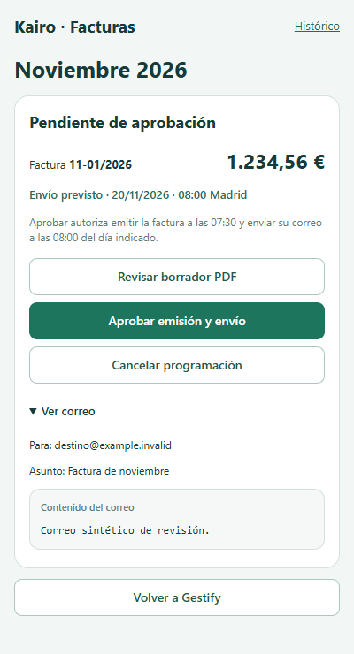

Contenido del correo · v525
Solo cambia la revisión de Kairo: destinatarios y asunto quedan fuera del recuadro del mensaje. Datos ficticios; no se aprueba ni envía ninguna factura.
Solo cambia la revisión de Kairo: destinatarios y asunto quedan fuera del recuadro del mensaje. Datos ficticios; no se aprueba ni envía ninguna factura.
